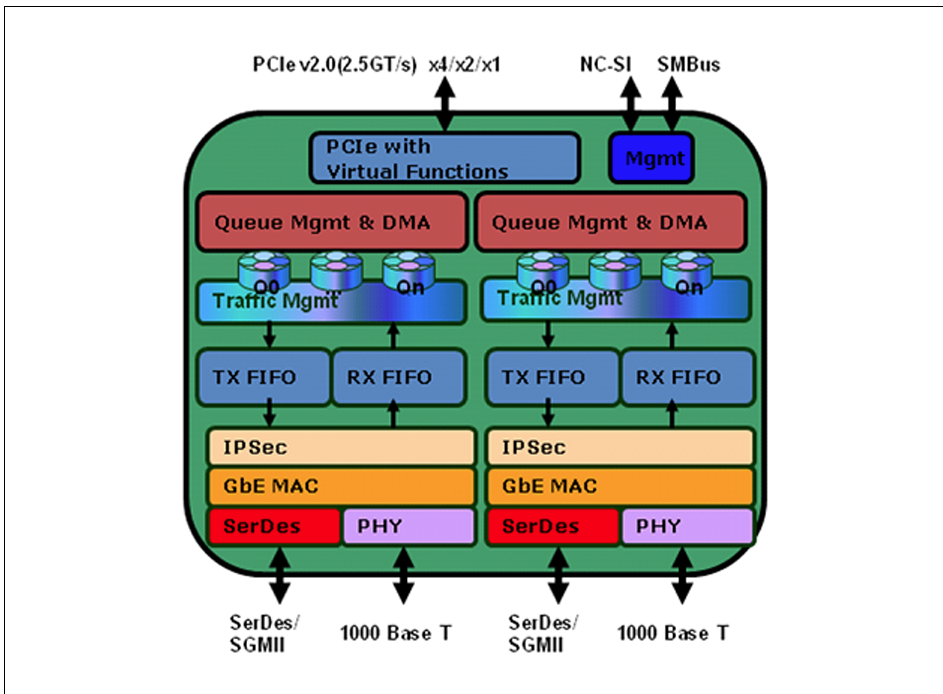
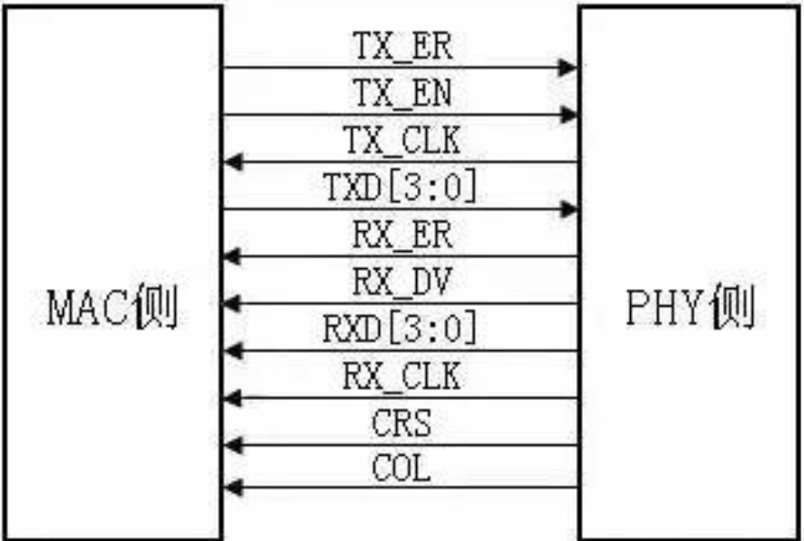

IGB 网卡驱动
资料
硬件架构
CPU集成MAC:

网卡包含MAC和PHY:

IGB网卡架构:

MAC(Media Access Control)
PHY(Physical Layer)
MII(Media Independent Interface)

-
发送数据接口
-
接收数据接口
-
MDIO：配置PHY芯片状态、读取寄存器、获取LINK状态等操作
RMII、GMII、RGMII、SGMII等都是MII的变种，主要区别在于数据传输速率和引脚数量。
驱动分析
OSAL 操作系统抽象层
trait-ffi 使用trait生成和安全使用外部函数。
驱动初始化
PCIe 枚举
手册阅读、寄存器定义
MAC定义
PHY定义
PHY寄存器读写
Smoltcp
网络栈验证
Request/Response 模型
收发数据
Ring
-
Head
-
Tail
Descriptor
-
Read
-
Write-Back
-
Buffer
Reqeust 生命周期
IxGBE 驱动 HAL API 调用表
| 函数名 | 参数 | 返回值 | 功能描述 |
|---|---|---|---|
dma_alloc | size: usize - 分配内存大小（字节）。 | (IxgbePhysAddr, NonNull<u8>) - 物理地址（u64）和虚拟地址指针。失败返回 (0, dangling)。 | 使用 axdma::alloc_coherent 分配 8 字节对齐的 DMA 一致性内存，用于 Tx/Rx 环缓冲区。 |
dma_dealloc | paddr: IxgbePhysAddr - 物理地址。 vaddr: NonNull<u8> - 虚拟地址指针。 size: usize - 内存大小。 | i32 - 始终返回 0（成功）。 | 使用 axdma::dealloc_coherent 释放 DMA 内存，处理原始指针，标记为 unsafe。 |
mmio_phys_to_virt | paddr: IxgbePhysAddr - 物理地址。 size: usize - 大小（未使用）。 | NonNull<u8> - 虚拟地址指针。 | 使用 axhal::mem::phys_to_virt 将 MMIO 物理地址转换为虚拟地址，访问设备寄存器，标记为 unsafe。 |
mmio_virt_to_phys | vaddr: NonNull<u8> - 虚拟地址指针。 size: usize - 大小（未使用）。 | IxgbePhysAddr - 物理地址（u64）。 | 使用 axhal::mem::virt_to_phys 将 MMIO 虚拟地址转换为物理地址，设置 DMA 描述符，标记为 unsafe。 |
wait_until | duration: core::time::Duration - 等待时间。 | Result<(), &'static str> - 始终返回 Ok(())。 | 使用 axhal::time::busy_wait_until 执行忙等待，用于驱动操作中的超时处理。 |
代码实现讲解
ixgbe.rs IxGBE 驱动 HAL 实现，通过 IxgbeHalImpl 结构体实现 IxgbeHal trait，支持 DMA 内存管理、MMIO 地址转换和定时操作。代码运行在 ArceOS 的 no_std 环境中，依赖 axdma（DMA 分配）、axdriver_net::ixgbe（trait 定义）、axhal::mem（地址转换）和 core 模块（指针和时间操作）。以下从依赖、结构到每个 API 的实现逐一讲解，确保与飞腾派硬件上下文（Mini-PCIe 接口支持 10GbE 网卡）相关。
关键依赖与结构
- 依赖：
- axdma：提供 alloc_coherent 和 dealloc_coherent，用于 DMA 一致性内存分配。
- axdriver_net::ixgbe：定义 IxgbeHal trait 和类型（如 IxgbePhysAddr 为 u64，NonNull
为指针）。 - axhal::mem：提供 phys_to_virt 和 virt_to_phys 用于 MMIO 地址转换。
- core::alloc::Layout：定义内存布局，确保 8 字节对齐。
- 结构：
- IxgbeHalImpl：空结构体，仅作为 IxgbeHal trait 的实现载体。
- DMAInfo：axdma 提供的结构体，包含 cpu_addr（虚拟地址，NonNull
）和 bus_addr（物理地址，BusAddr）。
API 实现讲解
dma_alloc
#![allow(unused)] fn main() { fn dma_alloc(size: usize) -> (IxgbePhysAddr, NonNull<u8>) { let layout = Layout::from_size_align(size, 8).unwrap(); match unsafe { alloc_coherent(layout) } { Ok(dma_info) => (dma_info.bus_addr.as_u64() as usize, dma_info.cpu_addr), Err(_) => (0, NonNull::dangling()), } } }
功能：分配 8 字节对齐的 DMA 一致性内存，用于 IxGBE 的 Tx/Rx 环缓冲区（如描述符或数据包缓冲区）。
实现：
- 使用 Layout::from_size_align 创建内存布局，确保 8 字节对齐（匹配缓存线）。
- 调用 axdma::alloc_coherent（标记为 unsafe，处理原始内存），返回 DMAInfo（包含 bus_addr 和 cpu_addr）。
- 成功时返回物理地址（bus_addr 转为 usize）和虚拟地址指针（cpu_addr），失败返回 (0, dangling)。
dma_dealloc
#![allow(unused)] fn main() { unsafe fn dma_dealloc(paddr: IxgbePhysAddr, vaddr: NonNull<u8>, size: usize) -> i32 { let layout = Layout::from_size_align(size, 8).unwrap(); let dma_info = DMAInfo { cpu_addr: vaddr, bus_addr: BusAddr::from(paddr as u64), }; unsafe { dealloc_coherent(dma_info, layout) }; 0 } }
功能：释放 DMA 一致性内存，清理 Tx/Rx 缓冲区。
实现：
- 标记为 unsafe，因涉及原始指针和内存释放。
- 重新创建 Layout（8 字节对齐），构造 DMAInfo（包含 vaddr 和 paddr）。
- 调用 axdma::dealloc_coherent 释放内存，始终返回 0（成功，假设释放无失败）。
mmio_phys_to_virt
#![allow(unused)] fn main() { unsafe fn mmio_phys_to_virt(paddr: IxgbePhysAddr, _size: usize) -> NonNull<u8> { NonNull::new(phys_to_virt(paddr.into()).as_mut_ptr()).unwrap() } }
功能：将 MMIO 物理地址转换为虚拟地址，用于访问 IxGBE 设备寄存器（如 BAR0）。
实现：
- 标记为 unsafe，因处理原始指针。
- 使用 axhal::mem::phys_to_virt 将物理地址（paddr）转为虚拟地址，返回 NonNull
指针。 - size 参数未使用，假设映射由 ArceOS 内存管理器处理。
mmio_virt_to_phys
#![allow(unused)] fn main() { unsafe fn mmio_virt_to_phys(vaddr: NonNull<u8>, _size: usize) -> IxgbePhysAddr { virt_to_phys((vaddr.as_ptr() as usize).into()).into() } }
功能：将 MMIO 虚拟地址转换为物理地址，用于 DMA 描述符设置。
实现：
- 标记为 unsafe，因处理原始指针。
- 使用 axhal::mem::virt_to_phys 将虚拟地址（vaddr）转为物理地址，返回 u64（IxgbePhysAddr）。
- size 参数未使用，假设映射固定。
wait_until
#![allow(unused)] fn main() { fn wait_until(duration: core::time::Duration) -> Result<(), &'static str> { axhal::time::busy_wait_until(duration); Ok(()) } }
功能：执行指定时间的忙等待，用于驱动中的超时处理（如链路协商或设备重置）。
实现：
- 调用 axhal::time::busy_wait_until，基于 CPU 周期或定时器实现等待。
- 始终返回 Ok(())，无错误处理（假设忙等待无失败）。